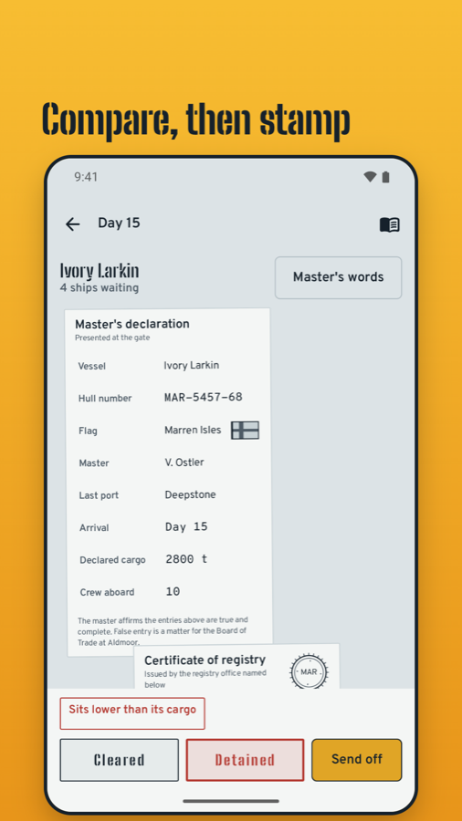
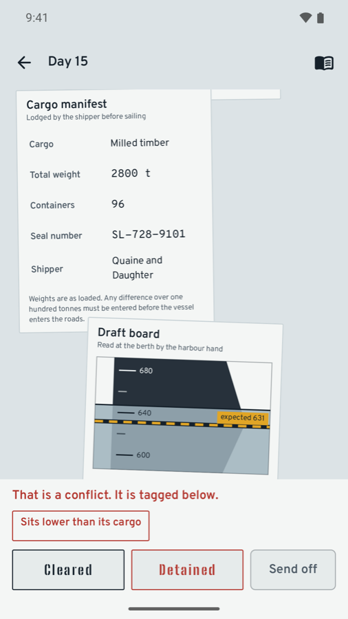
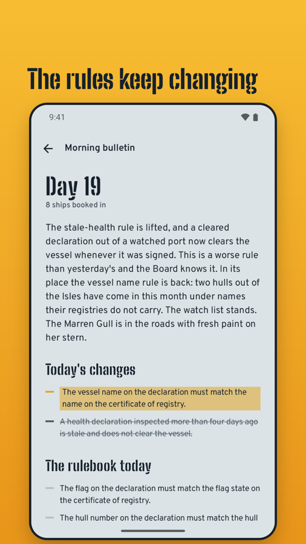
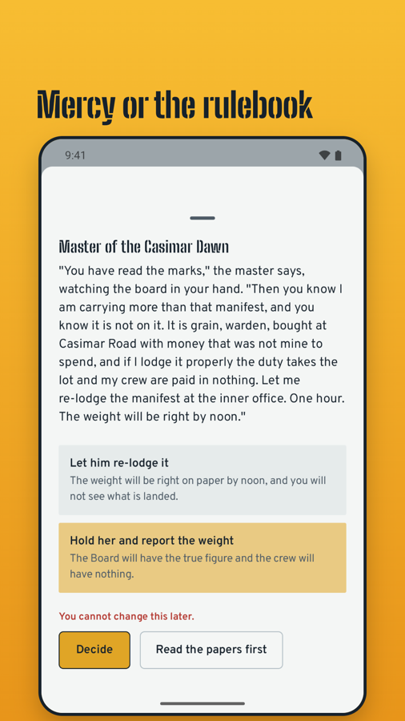
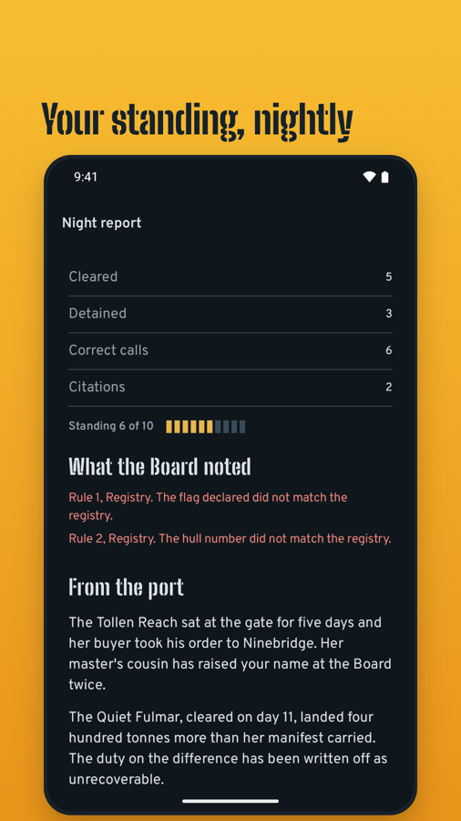
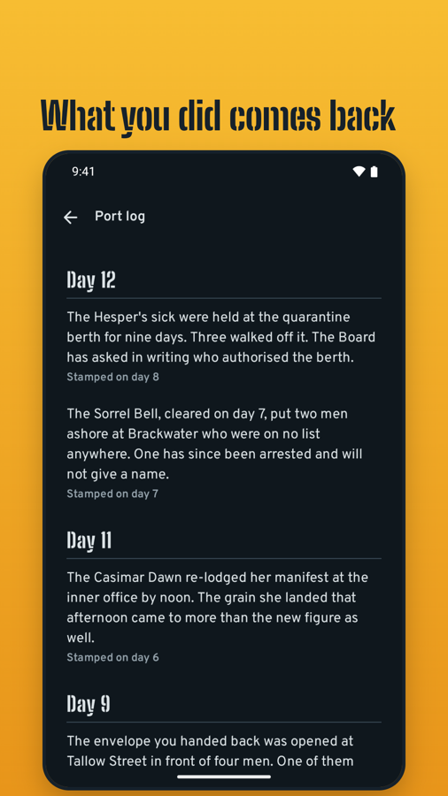

The Amber Curlew, cleared on day 9, has been found tied at Deepstone with her stem plate ground flat. The hull number under the paint was not the one you read.
Stamped on day 9Keep the gate at Port Aldmoor for thirty days. Check the papers, read the waterline, stamp, and live with it.
Get it on Google PlayOne purchase, USD 2.99. No ads, no subscription, no account. Works fully offline.


A hull sinks a known number of centimetres for every tonne it loads. Compare the manifest with the ship at the berth and Portwarden draws a dashed line where the water should stand for that weight.
Water above the line is cargo nobody declared. The master across the desk knows you can see it.
When the rules change, the morning bulletin names exactly what changed. New rules are highlighted, lifted rules are struck out, and nothing arrives without warning.
A flawed ship you let through does not vanish. Usually two to six days later her name is in the port log, with the day you stamped her.
The Amber Curlew, cleared on day 9, has been found tied at Deepstone with her stem plate ground flat. The hull number under the paint was not the one you read.
Stamped on day 9The Hesper's sick were held at the quarantine berth for nine days. Three walked off it. The Board has asked in writing who authorised the berth.
Stamped on day 8The envelope you handed back was opened at Tallow Street in front of four men. One of them wrote your name down.
Stamped on day 4



One purchase, USD 2.99. No ads, no in-app purchases, no subscription and no account.
The app has no internet permission and works fully offline. To move your save to another phone, send it through the share sheet.
No shift clock, no energy, no streaks. Large document text and a dark theme are in Settings.
Every nation, flag and registry is fictional. The story includes smuggling, bribery, disease and deaths, in text only.